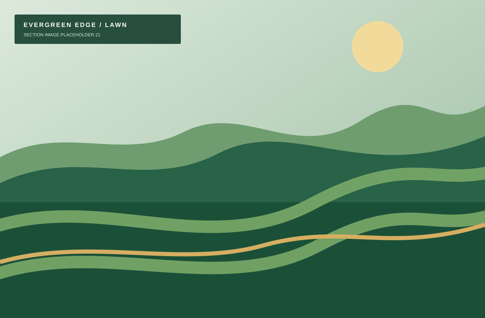
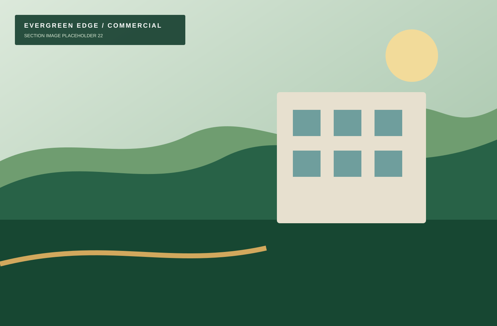

Capable site care
Offices, retail centers, medical offices, small apartment communities, HOAs, schools, childcare facilities, places of worship, professional buildings, and multi-location owners can receive a tailored scope.

Commercial lawn maintenance
Predictable landscape maintenance, clear communication, and documentation for Palm Beach County property managers and small commercial sites.
Offices, retail centers, medical offices, small apartment communities, HOAs, schools, childcare facilities, places of worship, professional buildings, and multi-location owners can receive a tailored scope.
We align mowing, detail visits, and seasonal cleanup with your property’s visibility, access, and traffic needs.
Property managers can request concise updates and service-completion photos to keep teams informed.

From site walk to ongoing care
We focus on small commercial and managed properties—not large municipal or industrial operations.
Commercial estimate request
Include site count, current service needs, and any reporting requirements.
Commercial FAQ
Yes. We maintain small commercial sites, offices, retail properties, HOA common areas, and managed communities.
Yes. We can coordinate access and provide service-completion photos when requested.
Yes. Storm debris cleanup is available based on crew capacity and site conditions.
We reschedule as conditions allow and communicate when the route changes.
Yes. Both are available as standalone improvements or alongside maintenance.
Yes. Evergreen Edge is licensed and insured.
Free Palm Beach County estimates
Tell us what needs attention, and we’ll recommend a practical next step.